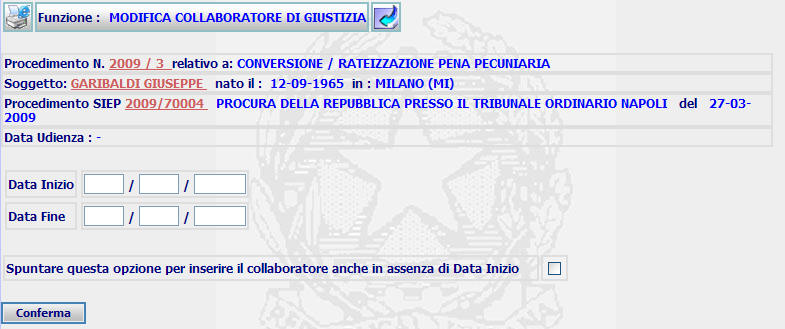
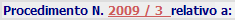
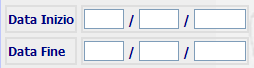

GENERALITA'
MODIFICA COLLABORATORE DI GIUSTIZIA: La funzione consente di inserire dello status di collaboratore di giustizia per il soggetto di un determinato procedimento SIUS
LE MASCHERE VIDEO
La funzione in esame viene realizzata attraverso l'utilizzo della seguente maschera che riporta gli elementi descrittivi e operativi del collaboratore di giustizia:

COME FARE PER ...
| Per visualizzare il dettaglio del procedimento Sius l'utente deve cliccare sul link relativo all'Anno/Numero del procedimento Sius evidenziato in rosso; |

| Per visualizzare il dettaglio del soggetto l'utente deve cliccare sul link relativo al cognome/nome del soggetto evidenziato in rosso; |
| Per visualizzare il dettaglio del procedimento Siep l'utente deve cliccare sul link relativo all'Anno/Numero del procedimento Siep evidenziato in rosso; |

|
Per inserire dello status di collaboratore di giustizia per il soggetto di un determinato procedimento SIUS l'Utente deve:

|
Confermare i dati inseriti nella maschera agendo sul bottone
. A fronte di questa operazione il sistema presenta la maschera di dettaglio collaboratore di giustizia
CAMPI
I dati che consentono di definire un nuovo utente sono i seguenti:
| NOME | DESCRIZIONE |
|
Data inizio |
Consente di inserire la data di inizio |
|
Data fine |
Consente di inserire la data di fine |
PULSANTI
PULSANTI
Nella maschera sono presenti i pulsanti
 e
e
 che fanno parte del gruppo di
pulsanti di "Uso Comune"
che fanno parte del gruppo di
pulsanti di "Uso Comune"
BOTTONI
Oltre ai comandi funzionali relativi al menù verticale sono presenti i seguenti comandi:
|
COMANDI |
DESCRIZIONE |
|
|
A fronte di tale comando, il sistema dopo aver verificato la validità dei dati specificati, termina la funzione con l'inserimento dello status di collaboratore di giustizia. |
CONTROLLI
A fronte
della pressione del bottone
 , il sistema
verifica la correttezza dei dati e visualizza un messaggio di errore nel caso che
il
formato della
DATA INIZIO o FINE VALIDITA' non sia corretta; sono possibili tre casi:
, il sistema
verifica la correttezza dei dati e visualizza un messaggio di errore nel caso che
il
formato della
DATA INIZIO o FINE VALIDITA' non sia corretta; sono possibili tre casi:


Se il sistema non riscontrerà errori verrà visualizzata la maschera del dettaglio collaboratore di giustizia .